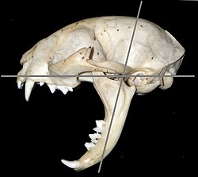

Por: Equipo 3 5CM51. Autor: Joshua Jesus Jiménez Vázquez.
El gato doméstico (Felis catus, también Felis silvestris catus), llamado comúnmente gato, y de forma coloquial minino, michino o michi, y algunos nombres más, es un mamífero carnívoro de la familia Felidae (también conocida como "felina").
Junto con el perro, el gato es el animal doméstico más popular como mascota. En 2017, la población mundial estimada de gatos estaba en seiscientos millones de felinos. En esta cifra se incluyeron gatos que son mascota, gatos callejeros (sin hogar) y gatos salvajes; sumando solo los gatos silvestres alrededor de 100 millones. El país considerado hasta esa fecha que más felinos tiene como mascota es Estados Unidos. Rusia contaba con aproximadamente 23 millones de gatos domésticos en 2021 convirtiéndose en el país europeo con mayor población de este tipo de felinos.
Por su amplio abanico de presas potenciales, por su alta eficiencia como depredador y por su elevado éxito reproductivo —especialmente si se suministra artificialmente alimento a las colonias sin tomar medidas adicionales para limitar su fertilidad— el gato doméstico está incluido en la lista de las cien especies exóticas invasoras más dañinas del mundo de la Unión Internacional para la Conservación de la Naturaleza.
Tiene otros nombres comunes, como michi, micho, mizo, miz, morroño, morrongo, mish, mishingo, misingo, etc.
El nombre actual en muchas lenguas proviene del latín vulgar catus. Paradójicamente, catus aludía a los gatos salvajes, mientras que los gatos domésticos eran llamados felis.
Miden alrededor de 46 cm de longitud de la cabeza al cuerpo y entre 23-25 cm de altura; generalmente poseen una cola de unos 30 cm de largo (salvo mutaciones/malformaciones o razas como el Bobtail o el Manx). Los machos son más grandes que las hembras.

Cráneo de gato doméstico mostrando el ángulo máximo de apertura de mandíbulas (80 grados)
Generalmente pesan entre 2,5 y 7 kg; sin embargo, algunas razas como el Ragdoll y el Maine Coon pueden exceder los 11,3 kilogramos. Han existido casos que superaron los 23 kg de peso debido a la sobrealimentación.
Los gatos domésticos tienen una esperanza de vida de entre doce y catorce años. El ejemplo más longevo del que se tiene registro vivió treinta y ocho años y tres días. Las hembras esterilizadas con anterioridad a su primer celo tienen menos posibilidades de sufrir cáncer de mama.
Su capa es muy variada: pueden ser de un solo color, de dos colores, como blanco y negro, blanco y naranja, pardo y blanco o gris y blanco. Pueden tener un patrón de colores atigrado (gatos romanos). También pueden tener un patrón de color siamés con colores más oscuros en la cara, rabo, patas y orejas. Pueden tener un manto carey, siendo de color negro casi todo el cuerpo con motitas pequeñas o con algunas manchas más grandes en algunas zonas de color naranja o miel. O bien pueden tener tres colores combinados, como, por ejemplo, blanco, negro y naranja.
Los gatos tricolores o de hasta cuatro colores son hembras. Los gatos romanos naranjas suelen ser machos. Cuanta más proporción de blanco se encuentre en el pelaje de una gata tricolor, más diferenciadas se encuentran las manchas de otros colores en el pelaje. Aquellas en las que el pelaje muestra manchas muy diferenciadas y alto porcentaje de blanco se denominan calicó, mariposa o gata española. Aquellas en las que el blanco apenas aparece y los colores se encuentran mezclados, como en un veteado, se denominan gatas carey. El tipo de pelo va desde el muy corto (como el Sphynx cuyo pelo es casi invisible), al rizado (en el caso del Rex Devon), al pelo corto normal con un solo color o con las puntas de otro color, al pelo semilargo, hasta el pelo más largo procedente de cruces con persa o cualquier otra raza de pelo largo. El proceso de domesticación ha supuesto presiones selectivas sobre el color del pelo y la textura. Aunque la mayoría de las razas se han desarrollado recientemente, a raíz de las diferentes estrategias de reproducción y las presiones de selección, gran parte de la variación de color en los gatos se desarrollaron durante la domesticación antes del desarrollo de las diferentes razas. Un estudio reciente en varios gatos blancos con manchas, se han observado mutaciones de polimorfismo de nucleótido simple del gen KIT son responsable del fenotipo pigmentación de las manchas y está, principalmente, involucrado en la migración de los melanocitos, la proliferación y la supervivencia.
Los gatos son digitígrados: caminan sobre sus dedos. Las patas delanteras tienen cinco dedos, uno de los cuales no apoya sobre el suelo, y las traseras tienen cuatro dedos.
Tienen garras retráctiles. Las garras están cubiertas por la piel que rodea las almohadillas de los dedos.
Treinta y dos músculos individuales en la oreja le permiten oír direccionalmente. Puede mover cada oreja independientemente de la otra. Gracias a esta capacidad, puede mover su cuerpo en una dirección y apuntar sus orejas en otra. La mayoría posee orejas rectas y erguidas: a diferencia de los perros, las razas con orejas caídas son extremadamente raras (la raza Scottish Folds es una de las excepciones por mutación genética). Cuando está enfadado o atemorizado, instintivamente reclinará sus orejas hacia atrás, cubriendo los canales auditivos.
Su temperatura corporal ronda entre los 38 y 39 °C Se considera que tiene fiebre si su temperatura es mayor a los 39,5 °C, o baja si es menor a los 37,5 °C (hipotermia). Comparativamente, los humanos tienen una temperatura corporal aproximada de 36,9 °C. El ritmo cardíaco de un gato doméstico normalmente se encuentra entre los ciento veinte y máximo de doscientos veinte latidos por minuto, dependiendo ampliamente de cuán excitado está el animal. Cuando descansa, en promedio, el ritmo cardíaco oscila entre los ciento cincuenta y ciento ochenta latidos por minuto.
Sus sentidos del olfato y oído son superiores en muchos aspectos a los del ser humano. Estos, junto con avanzados receptores de la visión, gusto y tacto, lo hacen uno de los mamíferos con un sistema sensorial más sofisticado.
Diferentes análisis indican que su visión es superior durante la noche a la de los humanos, e inferior a la de estos durante el día. Como los perros y otros animales, poseen el tapetum lucidum que refleja luz adicional sobre la retina. Aunque el tapetum lucidum le otorga la capacidad de ver con poca luz, parece reducir su precisión visual. En presencia de luz abundante, la pupila del ojo del gato se cierra considerablemente, reduciendo la cantidad de luz en la retina. El tapetum lucidum y otros mecanismos hacen que posea un umbral de detección de luz siete veces mayor que el de los humanos. El color de los ojos de un gato cuando refleja la luz incidente se debe a la luz reflejada por el tapetum lucidum.
El gato tiene la capacidad de utilizar al máximo la tenue luz visible y además existe la certeza de que pueden ver en el infrarrojo cercano. Un experimento realizado por científicos en que se buscaba determinar si era el movimiento o el calor lo que les atraía la atención a los gatos en la oscuridad, determinó que estos fundamentalmente eran atraídos por el calor de cuerpo, más que por el movimiento. En promedio posee un campo visual estimado de 200°, mientras que en los humanos es de 180°, esto nos permite ver objetos de una manera definida a una distancia de entre 30 y 60 m. Como la mayoría de los depredadores, sus ojos se ubican frontalmente, sacrificando algunos grados del campo visual para ganar percepción de profundidad. Utilizando dos imágenes del mismo objeto proyectadas en la retina desde diferentes ángulos, triangula la distancia hacia un objeto con un alto grado de precisión (visión estereoscópica).
La capacidad de su campo visual depende del emplazamiento de los ojos, aunque también podría estar relacionado con las características físicas del ojo. En vez de una fóvea óptica, la cual le otorga agudeza visual al humano, poseen una banda central conocida como raya visual. Aparentemente, pueden diferenciar ciertos colores perciben el color verde y son sensibles a longitudes de onda en el rango azul-violeta y amarillo-verde.
Poseen un tercer párpado, la membrana nictitante: una delgada lámina opaca que actúa como protección adicional. Esta membrana se cierra parcialmente si está enfermo; sin embargo, cuando está somnoliento también puede ser visible. Si el animal crónicamente muestra su tercer párpado, debería ser llevado a un veterinario para su revisión. Su posición es oblicua y parte desde el lacrimal, pero sin llegar a cerrar el globo ocular por completo.
Los gatos pueden percibir sonidos de tonalidad superior en dos octavas a los que puede percibir el ser humano, y una octava y media más elevada que los que oyen los perros. Pueden rotar las orejas de forma independiente para precisar el origen del sonido.
El sentido del olfato en el gato doméstico está bien desarrollado. Poseen un órgano de Jacobson u órgano vomeronasal, situado sobre el paladar, que les sirve para detectar feromonas. Utiliza un movimiento facial característico llamado reflejo de Flehmen para enviar compuestos químicos a este órgano.
Al analizar el genoma de los gatos en comparación con los perros se ha observado que los gatos se comunican quimiosensorialmente mediante feromonas avalado por un aumento del repertorio de genes de la familia V1r (receptores vomeronasales). Por el contrario, al analizar el repertorio de genes completos de la familia Or (receptores olfatorios) ilustra repertorios funcionales más pequeños en gatos que en perros, explicando en gran parte el menor uso de los gatos del olfato para cazar y localizar a sus presas que los perros.
Los gatos tienen relativamente pocas papilas gustativas en comparación con los humanos (cuatrocientos setenta más o menos frente a más de nueve mil en la lengua humana). Los gatos domésticos y salvajes comparten una mutación del gen receptor del gusto que evita que sus papilas gustativas dulces se unan a las moléculas azucaradas, dejándolos sin la capacidad de saborear el sabor dulce. En cambio, sus papilas gustativas responden a ácidos, aminoácidos, proteínas y sabores amargos.
Poseen cerca de una docena de cerdas sensitivas denominadas "vibrisas" en el labio superior y algunos en las mejillas, sobre los ojos y en el mentón. Finalmente, estas cerdas también pueden encontrarse en la muñeca y las cejas. La raza Sphynx puede llegar a carecer completamente de vibrisa. Estas cerdas transmiten impulsos eléctricos relacionados con impresiones táctiles a la región somatosensorial de la corteza cerebral, también denominada "región de barriles". En el cerebro, cada vibrisa tiene asignado un barril, el cual es un conjunto de neuronas corticales morfológicamente relacionadas con una columna cortical funcional.
Los gatos tienen una morfología especializada para la caza. Sus cuerpos son compactos, musculosos y extremadamente flexibles. Presentan un cráneo ancho con mandíbulas potentes y dientes especializados para sujetar y desgarrar carne.
El esqueleto felino consta de aproximadamente 244 huesos. Una de sus características más notables es la clavícula flotante, que permite al gato pasar su cuerpo por cualquier abertura por la que quepa su cabeza. Sus patas son digitígradas, lo que significa que caminan sobre sus dedos, y poseen garras retráctiles protegidas por una vaina de piel cuando no están en uso.
Como carnívoros estrictos, los gatos requieren nutrientes que solo se encuentran en el tejido animal, como la taurina y el ácido araquidónico. Su sistema digestivo es corto y eficiente, diseñado para procesar proteínas rápidamente. Los gatos tienden a beber poca agua de forma instintiva, ya que en estado salvaje obtienen la mayor parte de la hidratación de sus presas.
A diferencia de los leones, los gatos domésticos suelen cazar solos, pero pueden formar colonias complejas en áreas con abundancia de comida. Dentro de estas colonias, establecen jerarquías y comparten el cuidado de las crías en ocasiones.
Los gatos utilizan un sistema sofisticado de comunicación. El maullido es un sonido que los adultos raramente usan entre ellos, reservándolo casi exclusivamente para interactuar con humanos. El ronroneo, producido por vibraciones de los músculos de la laringe, puede indicar satisfacción, pero también se utiliza como un mecanismo de autocuración y alivio del dolor.
El gato es uno de los animales más limpios del reino animal. Pasa hasta un tercio de sus horas de vigilia acicalándose. Su lengua está cubierta de papilas cónicas compuestas de queratina que actúan como un peine, eliminando pelo muerto, parásitos y suciedad, además de ayudar a regular su temperatura corporal.
Las hembras alcanzan la madurez sexual entre los 4 y 10 meses. Son poliéstricas estacionales, con ovulación inducida por la cópula. El periodo de gestación dura entre 63 y 67 días, con camadas que varían típicamente de tres a cinco cachorros. Un gato doméstico bien cuidado puede vivir entre 12 y 18 años, aunque algunos han superado los 30 años de edad.
La relación del hombre con el gato comenzó en el Neolítico. En el Antiguo Egipto, los gatos alcanzaron un estatus divino, personificado en la diosa Bastet. En la Edad Media europea, sufrieron una etapa de persecución debido a su asociación con la brujería, lo que indirectamente facilitó la propagación de la peste negra al aumentar la población de ratas. Actualmente, son iconos de la cultura digital y figuras centrales en el hogar moderno.
Los gatos pueden verse afectados por virus específicos como el Virus de la Leucemia Felina (FeLV) y el Virus de la Inmunodeficiencia Felina (FIV). Las enfermedades renales son comunes en ejemplares de edad avanzada. La vacunación y la esterilización son prácticas recomendadas para aumentar su esperanza de vida y controlar las poblaciones de gatos ferales.
{kind=link}
{kind=link}
{kind=link}
{kind=link}